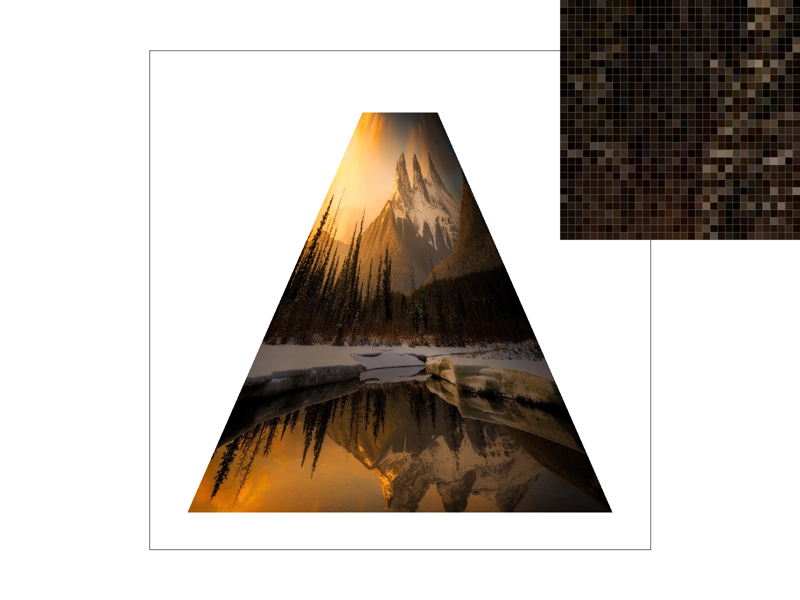
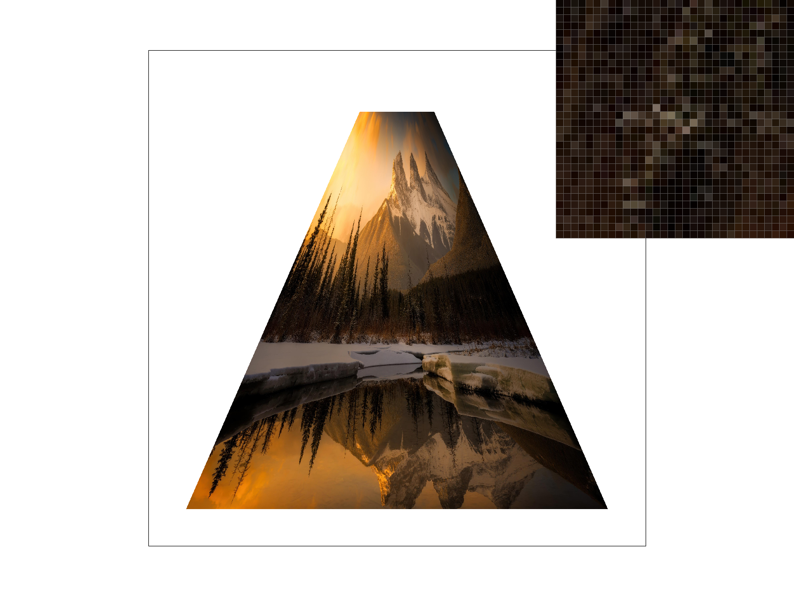
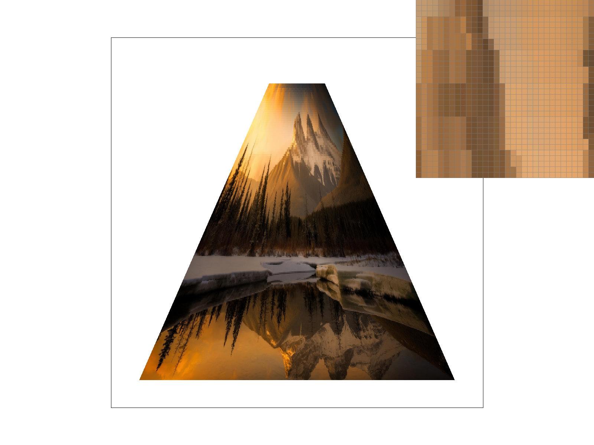
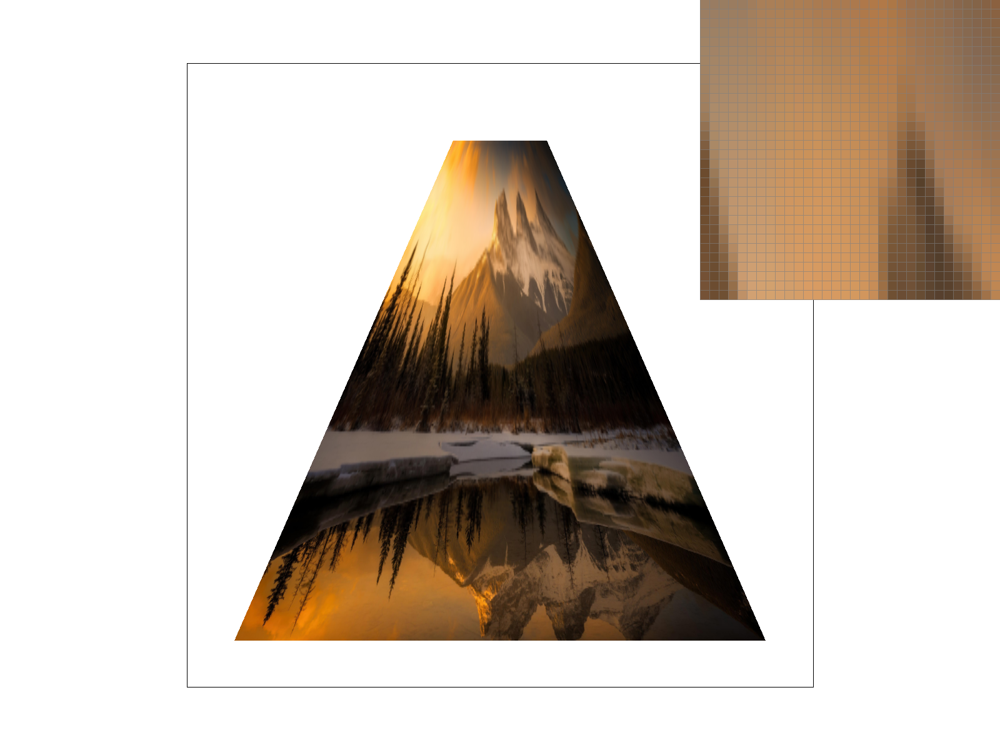

CS184/284A Fall 2026 Homework 1 Write-Up
Names:
Link to webpage: https://cal-cs184-student.github.io/hw1-myself-writeup/
Link to GitHub repository: https://github.com/cal-cs184-student/hw1-myself

Overview
This is a project where we render svgs or svg like objects, borrowing the language of svgs to render defined shapes in locations we want. This project corrected a misconception I had that screen computation was "free", I thought that it was something computers just did well naturally. It also taught me to trust the philosophy of putting absolute trust in your mathematic functions.Task 1: Drawing Single-Color Triangles
I rasterized triangles by defining a bounding box, and then iterating through the box. First, I correct the winding order, next I used the line by line optimization where instead of recalculating the function to see if it's inside the triangle, i reuse old data by moving a tiny offset. Finally, during the bounding box I use a y line to see where the line intersects and store those variables so the box doesn't need to run tests on mostly white space.
Task 1: EC
Major Optimizations:
I used the line by line optimization where instead of recalculating the function to see if it's inside the triangle, i reuse old data by moving a tiny offset. I also used the slope of the line to find start and end points instead of evaluating the triangles with huge bounding boxes. This halved my execution time, as expected.
Minor Optimizations:
I used floats even though they were inaccurate someties, i minimized recomputation of the row coordinates(probably already handled by the compiler, did nothing)
Here are the times for basic bounding box
svg.draw(): 4.52187 ms
svg.draw(): 4.48513 ms
svg.draw(): 4.48746 ms
svg.draw(): 4.48204 ms
svg.draw(): 4.46208 ms
svg.draw(): 4.52325 ms
svg.draw(): 4.46633 ms
svg.draw(): 4.45746 ms
svg.draw(): 4.48917 ms
Here are the times for optimized line calculations
svg.draw(): 1.83475 ms
svg.draw(): 1.76463 ms
svg.draw(): 1.77954 ms
svg.draw(): 1.79533 ms
svg.draw(): 1.76937 ms
svg.draw(): 1.77687 ms
svg.draw(): 1.74896 ms
svg.draw(): 1.79021 ms
svg.draw(): 1.75167 ms
Task 2: Antialiasing by Supersampling
I implemented supersampling by expanding the buffer and, as an abstraction scaled up the width and height of the image. I made some changes to some helper functions, but my primary ones were rasterize_point to correctly rasterize lines, rasterize_triangle, where i just acted like the size of the image increased, and resolve_to_frame_buffer, where the data gets translated into the final buffer frame. Supersampling is useful because sampling the middle of the pixel doesn't give accurate information 100% of the time and could cause rough textures. As for the rasterization process, i accumulate from the neighboring pixels and write to frame buffer.My 2x2 grid

|

|

|

|
Task 3: Transforms

Task 4: Barycentric coordinates
Barycentric coordinates are a way to describe the location a point is in relative to other points.

Task 5: "Pixel sampling" for texture mapping
Pixel sampling is getting the pixel at coordinate uv given the texture, which is required because textures do not map neatly to coordinate points. I implemented this by reusing my previous Barycentric code for both u and v. Biliniear is getting the 4 nearest pixels and lerping them, Nearest is getting the nearest pixel.My 2x2 grid

|

|

|

|
Task 6: "Level Sampling" with mipmaps for texture mapping
Level sampling is the idea that some textures are more important than others. For example, in video games where some textures are just far away. I implemented it by using a switch statement, then calculating du/dx dv/dx du/dy dv/dy and using the formula from class. I calculated the derivatives by getting the locations of the textures one down and one right. Then, in get level i used the slope and found the pythagorean theorem.Zero level is the computationally cheapest, using no additional memory or overhead. However, it provides bad antialiasing because compressed textures are not sampled well.
Nearest sampling is using the distance to the next pixel to calculate a level. This causes more computation to happen, and more storage too. It provides good results, but because it's a strict integer some places will still have aliasing artifacts.
Level sampling is using the distance to the next pixel to calculate a level.In addition to that, it uses the next map to blend the two pixels together, causing less aliasing. This is good, but it's more computationally expensive, requiring more to lookup both levels.
My 2x2 grid
|
 |
 |
|
 |
 |